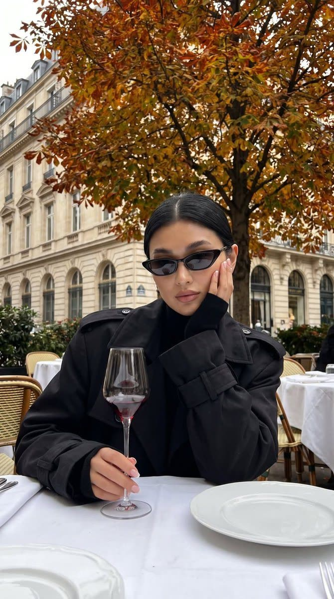

Realistic Cafe Portrait Prompt for GPT Image 2
REA-004RealismGPT Image 2by SairahOctober 8,

A detailed prompt for generating a realistic iPhone-style photo of a woman in a cafe using GPT Image 2, focusing on faithful character reproduction from a reference image and specific lighting/composition details.
Prompt
Shot on an iPhone. The woman’s appearance should be 100% faithful to the uploaded reference photo, sitting at a café table outdoors under an autumn tree, centered in the frame. Her body is facing forward, her head slightly tilted, with one cheek gently resting on one hand while the other hand is relaxed on the table, holding the stem of a wide red-wine glass with a very thin, long, delicate stem and thin glass walls. Only a small amount of wine remains at the bottom. She is wearing a voluminous black trench coat with structured shoulder pads and oversized long sleeves covering her fingers, with a black turtleneck underneath. Hair exactly matching the uploaded photo. White tablecloth, elegant white plates, a classic European-style building façade in the background, with an autumn tree filling the upper part of the frame. True-to-life iPhone realism, subtle natural film grain, authentic skin texture and lighting. Do not blur the background; maintain realistic environmental detail throughout the scene. Short square French-tip manicure. 9:16 vertical format. She is wearing narrow black rimless cat-eye sunglasses. Overcast daytime with no direct sunlight. Slightly slower shutter speed for a subtle natural motion/film feel while keeping the subject realistic and recognizable.
Tags: 35mm film, 9:16 vertical